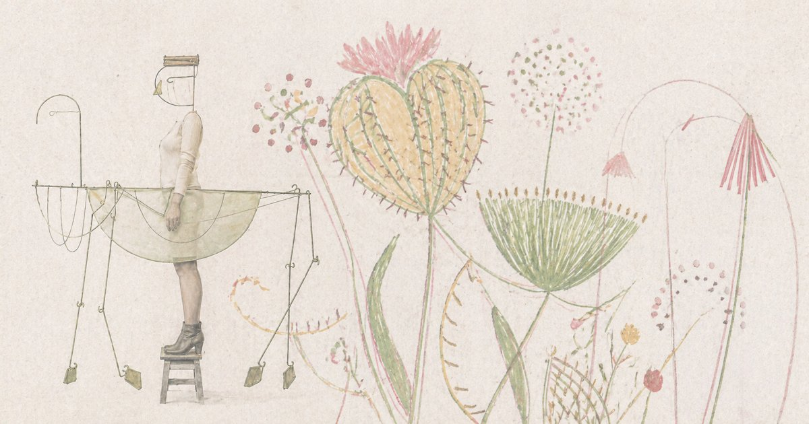
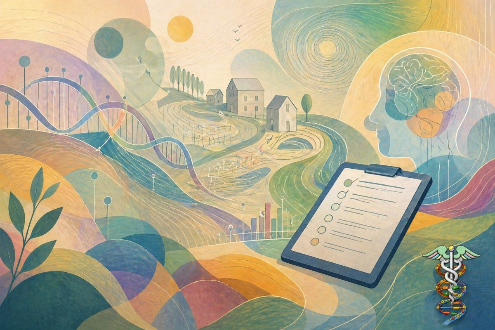

1. groen: 008000 & #005000
2. blauwgroen: 008080 & #005050
3. bleek blauw: 0080FF
4. lichtblauw: 0080C0
5. blauw: 004080 & #002850
6. roodbruin: 800040
7. bruin: 804040 & #502828
8. grijs: 808080
9. roze: FF8080

